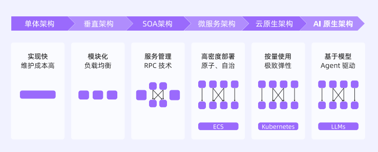
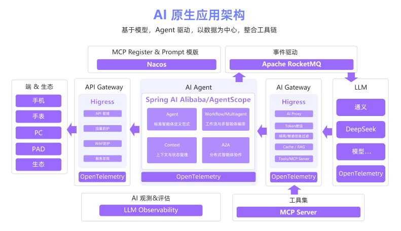

【AI白皮书】AI原生应用及其架构¶
1.1 大模型技术发展回顾和产业价值¶
1.1.1 大模型发展回顾与展望¶
2022年11月，ChatGPT横空出世，模型即服务（MaaS）模式快速兴起，AI从实验室走向商业场景。2024年，OpenAI推出o1模型和4o模型，大模型技术迎来质的飞跃。2025年，多家大模型厂商支持模型上下文协议（MCP），Google推出A2A架构，AI从单点工具向系统级生产力工具转变。
1.1.2 大模型的五大产业价值¶
效率新工具、服务新体验、产品新形态、决策新助手、科研新模式。
1.2 AI时代应用架构的演进¶
1.2.1 IT应用架构的演进脉络¶

云原生架构是指，Kubernetes等技术通过容器化、集群化管理，实现按量使用、秒级弹性的极致资源调度。
每一次架构升级，都是在满足业务规模更大、需求变化更快、资源成本更低的述求。
1.2.2 云原生应用架构向AI原生应用架构的跃迁¶
如果说，云原生解决的是如何高效地运行，那么AI原生是在此基础上解决如何智能地运行。
在云原生应用架构中，我们讨论的是容器如何管理、服务如何拆分、流量如何治理。而在AI原生应用架构下，其目标是在满足可扩展、可观测、安全合规的同时，最大化释放模型的智能潜力。
在大语言模型（LLM）出现之前，AI只能以功能模块形态嵌入系统。LLM具备通用理解、推理和生成能力，并能通过函数调用、外部工具联动和知识库，形成可扩展的Agent体系。AI原生应用的运行逻辑不再完全由工程师编写的代码所决定，而是由大模型进行自出判断、行动和生成，并具备以下3个特征：
以LLM为核心，用自然语言统一交互协议；
以多模态感知扩展输入边界，以Agent框架编排工具链；
以数据飞轮驱动模型持续进化，实现系统的自我优化。
1.3 AI原生应用及其架构的定义¶

AI原生应用架构，涵盖了模型、应用开发框架、提示词、RAG、记忆、工具、网关、运行时、可观测、评估和安全等关键要素。
1.3.1 大模型推理决策¶
传统应用使用编程语言（Java、C++等）进行编码，AI原生应用使用大语言模型（LLM），通过Prompt（提示词）等自然语言方式进行构建。
LLM具有语义理解与推理方面的能力，能够在面对模糊和复杂的开放式任务时，自主生成和调整业务执行逻辑，并根据需要完成工具调用与流程编排。
1.3.2 Agent编排和执行¶
传统应用是工具，Agent是助手。单Agent无法完成复杂任务时，可以协同多Agent编排完成复杂任务。自身能力受限时，可以扩展工具，甚至自己编写工具完成任务。
1.3.3 数据优化决策¶
模型输出可能存在偏差，甚至在某些情况下完全不符合用户或业务方的预期。为了解决这个问题，AI原生应用必须具备基于数据驱动的持续进化能力。在多轮交互中，持续保留并利用历史信息，理解用户的偏好、行为习惯与目标。同时，应用还需要通过数据采集构建高质量的评测数据集，并结合行业数据、用户反馈数据和客户业务数据进行持续评估与优化。
1.3.4 工具调用与环境连接¶
大语言模型运行机制的本质仍是基于“输入Token→输出Token”的序列生成过程。受限于这一机制，模型既无法直接感知外部环境，也无法获取实时更新的知识，更缺乏对物理世界的直接操控能力。
AI原生应用通常通过工具调用的方式扩展模型的环境连接能力。一是支持语音、图像乃至动作等多模态输入；二是支持联网检索获取最新信息，并且通过API对接外部系统，或直接驱动企业内部系统的业务流程。“模型+工具”协同运行。